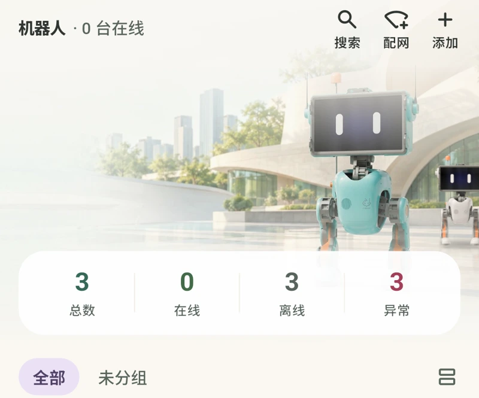

镋钯 / 配套软件
连接机器人、现场遥操与管理任务。

01 / GET STARTED
请通过交付或现场运维渠道获取与设备版本匹配的 Android 安装包及账号。
在机器人页查找或添加设备。使用本地模式时，将手机与机器人接入同一局域网。
进入设备后可打开遥操。需要播放编排内容时，选择素材或脚本，配置并同步任务。
02 / DOCUMENTATION
使用机器人前，请先阅读对应交付版本的安全须知与操作说明。